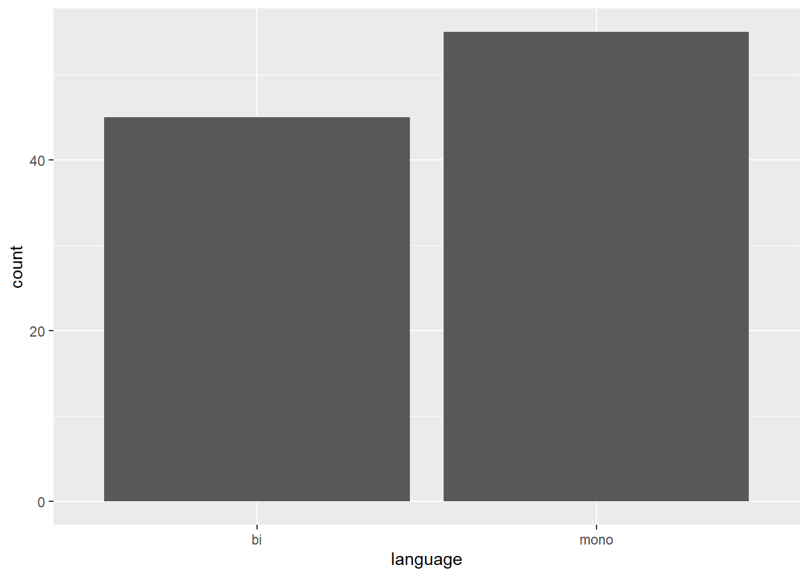
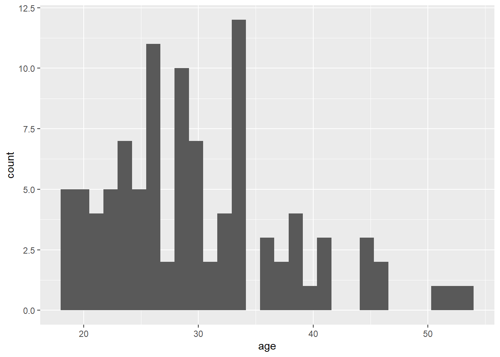
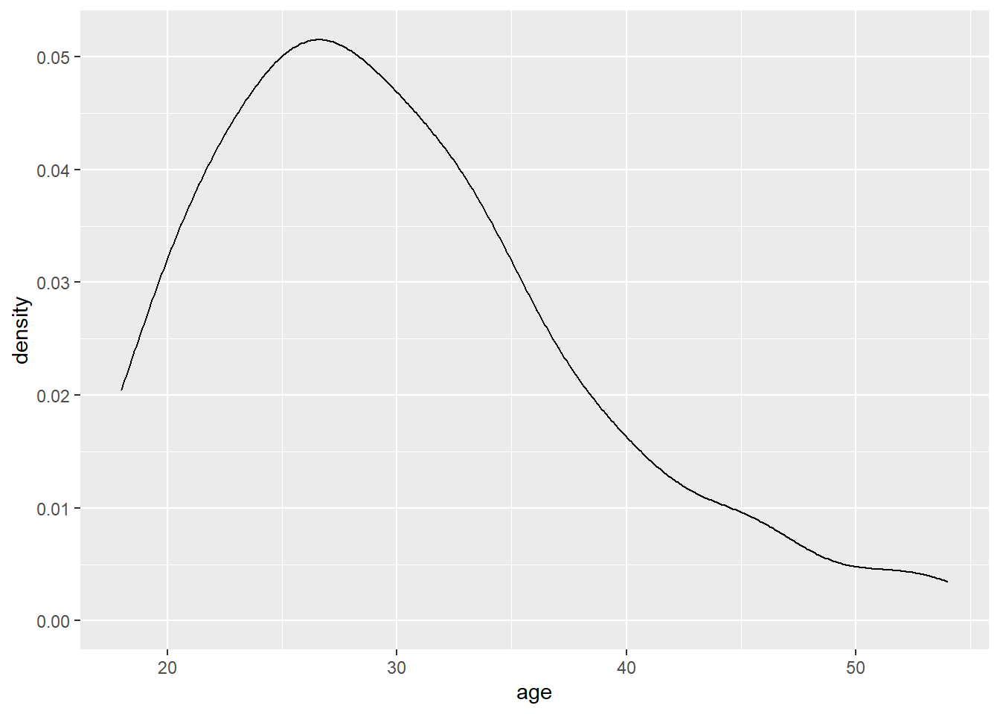
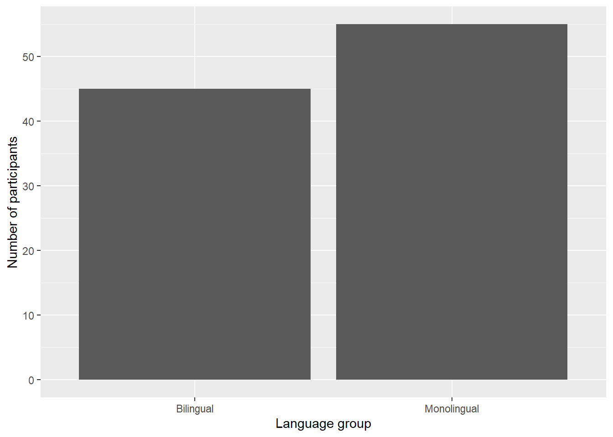
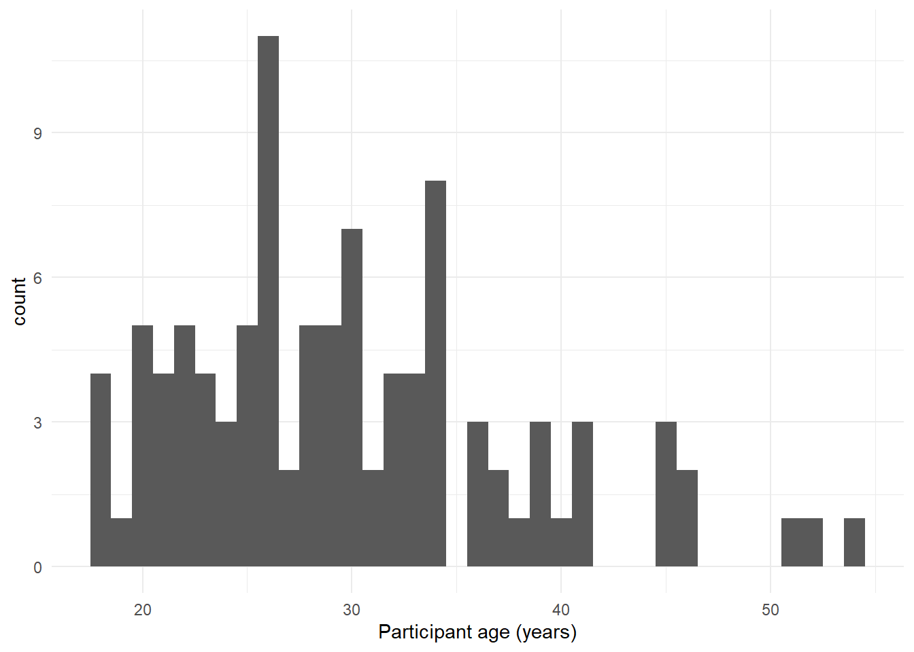

Chapter 1 Introduction
Use of the programming language R for data processing and statistical analysis by researchers is increasingly common with a GET THE STATS FROM THAT THING I SAW ABOUT R ON TWITTER increase since XXXX (REF). In addition to benefiting reproducibility and transparency, one of the advantages of using R is that researchers have a much larger range of fully customisable data visualisations options than are typically available in point-and-click software, due to the open-source nature of R. These visualisation options not only look attractive, but can increase transparency about the distribution of the underlying data rather than relying on commonly used visualisations of aggregations such as bar charts of means (REF HERE ABOUT BAR CHARTS).
Yet, the benefits of using R are hindered by its notoriously steep learning curve (REF - is there a ref?) and that that only a minority of psychology programmes currently teach programming skills (REF, PsyTeachR ref) with the majority of both undergraduate and postgraduate courses using proprietary point-and-click software such as SPSS or Microsoft Excel.
In this paper we aim to provide a practical introduction to data visualisation using R, specifically aimed at researchers who have little to no prior experience using R. We detail the rationale for using R for data visualisation, introduce the “grammar of graphics” that underlies data visualisation using the ggplot package, and provide a tutorial that walks the reader through how to replicate plots that are commonly available in point-and-click software such as histograms and boxplots, as well as showing how the code for these “basic” plots can be easily extended to less commonly available options such as violin-boxplots, raincloud plots, and heat-maps.
1.1 Why R for data visualisation?
Data visualisation benefits from the same advantages as statistical analysis when writing code rather than using point-and-click software - reproducibility and transparency. The need for psychological researchers to work in reproducible ways has been well-documented and discussed in response to the replication crisis (REFs) and we will not repeat these arguments here. However, there is an additional selfish benefit to reproducibility that is less frequently acknowledge compared to the loftier goals of improving psychological science: if you write code to produce your plots, future-you can reuse and adapt that code rather than starting from scratch each time.
In addition to the benefits of reproducibility, using R for data visualisation gives the researcher almost total control over each element of the plot. Whilst this flexibility can seem daunting to novice users of R, if one can survive the initial learning curve, the ability to write reusable code recipes (and use recipes created by others) is highly advantageous. The level of customisation and the professional outputs available using R has led to news outlets such as the BBC (BBC Visual and Data Journalism, 2019) and the New York Times (Bertini & Sefaner, 2015) to adopt R as their preferred data visualisation tool.
1.2 A layered grammar of graphics
There are multiple approaches to data visualisation in R; in this paper we will be using the popular package1 ggplot2 (REF) which is part of the larger tidyverse2 collection of packages that provide functions for data wrangling, descriptives, and visualisation. A grammar of graphics (Wilkinson, Anand, & Grossman, 2005) is a standardised way to describe the components of a graphic. ggplot2 uses a layered grammar of graphics (Whickham, 2010), in which plots are built up in a series of layers. This approach may be familiar to users of MATLAB but can be unintuitive to those used to creating plots in Excel or SPSS.
Figure 1 displays the evolution of a simple scatterplot using this layered approach. First, the plot space is built (layer 1); the variables are specified (layer 2); the type of visualisation (known as a geom) that is desired for these variables is specified (layer 3) - in this case geom_point() is called to visualise individual data points; a second geom is added to include a line of best fit (layer 4), the axis labels are edited for readability (layer 5), and finally, a theme is applied to change the overall appearance of the plot (layer 6).

Figure 1.1: Figure 1: Evolution of a layered plot
Importantly, each layer is independent and independently customisable. For example, the size, colour and position of each component can be adjusted, or, one could, for example, remove the first geom to only visualise the line of best fit, simply by removing the layer that draws the data points (see Figure 2). The use of layers makes it easy to build up complex plots step-by-step, and to adapt or extend plots from existing code.

Figure 1.2: Figure 2: Scatterplot with removed layer
1.3 Data structures
The final conceptual issue we will address is the structure of datasets required to work with ggplot(). Traditionally, wide-format data is the preferred or default format. Wide-format data typically has one row of data for each participant with separate columns for each score or variable. Where there are repeated-measures variables, the dependent variable is split across different columns with one measurement for each condition. For the purpose of this tutorial, we will use simulated data for a 2 x 2 mixed-design Stroop test experiment. There are 6 variables:
Participant ID
Age
A between-subject IV: Language group (monolingual/bilingual)
A within-subject IV: Congruency (congruent/incongruent)
Dependent variable 1: Reaction time (ms)
Dependent variable 2: Accuracy
In wide-format data, this would typically be formatted as in Table 1 where each participant’s aggregated 3 reaction time and accuracy for each level of the within-subject variable is split across multiple columns.
| id | age | language | rt_cong | rt_incon | acc_cong | acc_incon |
|---|---|---|---|---|---|---|
| S001 | 25 | mono | 369.46 | 666.82 | 99 | 90 |
| S002 | 37 | mono | 302.45 | 585.04 | 94 | 82 |
| S003 | 26 | mono | 394.94 | 608.50 | 96 | 87 |
| S004 | 32 | mono | 288.37 | 485.89 | 92 | 76 |
| S005 | 28 | mono | 306.42 | 551.32 | 91 | 83 |
| S006 | 34 | mono | 347.17 | 517.34 | 96 | 78 |
This format is popular because it is intuitive to read and easy to enter data into as all the data for one participant is contained within a single row. However, for the purposes of analysis, and particularly for analysis using R, this format is unsuitable because whilst it is intuitive to read by a human, the same is not true for a computer . Wide-format data combines multiple variables in a single cell, for example in Table 1, RT_cong contains information related to both a DV and the level of an IV. Whickham (2014) provides a comprehensive overview of the benefits of tidy data as a standard way of mapping a dataset to its structure but for the purposes of this tutorial there are two important rules: each column should be a variable and each row should be an observation.
Moving from using wide-form to long-form datasets can require a conceptual shift on the part of the researcher and one that usually only comes with practice and repeated exposure4. For our example dataset, adhering to these rules would produce Table 2. Rather than different observations of the same dependent variable being split across columns, there is now a single column for the DV reaction time, and a single column for the DV accuracy. Each participant now has multiple rows of data, one for each observation (i.e., for each participant there will be as many rows as there are levels of the within-subject IV). Although there is some repetition of age and language group, each row is unique when looking at the combination of measures.
| id | age | language | congruency | rt | acc |
|---|---|---|---|---|---|
| S001 | 25 | mono | cong | 369.46 | 99 |
| S001 | 25 | mono | incon | 666.82 | 90 |
| S002 | 37 | mono | cong | 302.45 | 94 |
| S002 | 37 | mono | incon | 585.04 | 82 |
| S003 | 26 | mono | cong | 394.94 | 96 |
| S003 | 26 | mono | incon | 608.50 | 87 |
The benefits and flexibility of this format will (hopefully) become apparent as we progress through the tutorial, however, a useful rule of thumb when working with data in R for visualisation is that anything that shares an axis should probably be in the same column. For example, a simple bar chart of means for the reaction time DV would display the variable congruency on the x-axis with bars representing both the cong and incon data, therefore, these data should be in one column and not split.
1.4 Tutorial
In this tutorial for each step we will explain the purpose of the code, provide the code to achieve that aim, and provide a plain English translation of what each line of code is doing. For each function, we will provide additional resources in the appendix that provide further instruction.
The simulated dataset and all below code can be found in the online supplementary materials.
1.5 Data prep
These preparatory steps can all be dealt with reproducibly using R and the additional resources section points to extra tutorials for doing so, however, performing these types of tasks in R can be difficult for new learners and the solutions and tools dependent on the idiosyncrasies of each dataset. For this reason, in this tutorial we encourage the reader to complete these steps using the method they are most comfortable with and to focus on the aim of data visualisation.
1.5.1 Data format
The simulated Stroop data is provided in a csv file rather than e.g., xslx. Functions exist in R to read many other types of data files, however, you can convert an xlsx spreadsheet to csv by using the Save As function in Microsoft Excel. Note that csv files strip all formatting and only store data in a single sheet; you may wish to create a csv file that only contains the data you wish to visualise that is part of a larger workbook.
1.5.2 Variable names
Ensuring that your variable names are consistent can greatly facilitate working in R. We recommend using short but informative variable names, for example rt_cong is preferred over dv1_iv1 or reaction_time_congruent_condition because these are either hard to read or hard to type.
It is also helpful to have a consistent naming scheme, particularly for variable names that require more than one word. Two popular options are CamelCase where each new word begins with a capital letter, or snake_case where all letters are lower case and words are separated by an underscore. For the purposes of naming variables, avoid using any spaces in variable names (e.g., rt cong) and consider the additional meaning of a separator beyond making the variable names easier to read. For example, rt_cong, rt_incon, acc_cong, and acc_incon all have the dv to the left of the separator and the level of the IV to the right. rt_cong_condition on the other hand has two separators but only one of them is meaningful and it is useful to be able to split variable names consistently. In this paper, we will use snake_case and lower case letters for all variable names so that we don’t have to remember where to put the capital letters.
1.5.3 Data values
A great benefit to using R rather than SPSS is that categorical data can be entered as text. In the tutorial dataset, language group is entered as mono or bi rather than numbers that require a code book and so is easier to read and avoids misinterpreting data due to coding errors. Before working with data in R, you may wish to convert any existing numerical codes to text labels, being mindful of the above rules regarding simplicity and consistency for variables names. Additionally, values must match exactly in order to be considered in the same category and R is case sensitive, i.e., mono, Mono, and monolingual would be classified as members of three separate categories.
Finally, cells that represent missing data should be left empty rather than containing e.g., NA, missing or 0. A complementary rule of thumb is that each variable should only contain one type of data, character or numeric, not both.
1.6 R prep
We strongly encourage the use of R in combination with RStudio. R is the programming language whilst RStudio is a integrated development environment that makes working with R easier. More information on installing both R and RStudio can be found in the additional resources.
Projects are a useful way of keeping all your code, data, and output in one place. To create a new project, open RStudio and click File - New Project - New Directory - New Project, you will be prompted to give the project a name, and select a location for where to store the project on your computer. Once you have done this, click Create Project. Copy the dataset to this folder. The files pane on the bottom right of RStudio show now display this folder and the files it contains - this is know as your working directory and it is where R will look for any data you wish to import and where it will save any output you create.
This tutorial will require you to use the packages contained with the tidyverse collection. Additionally, we will also require use of patchwork. To install these packages, copy and paste the below code into the console (the left hand pane) and press enter to execute the code.
package_list <- c("tidyverse", "patchwork")
install.packages(package_list)Finally, so that you can save your code to return to later, open a new script File - New File - R Script and then save it using File - Save. R will default to saving the script in your project folder. This is where we will write all the tutorial code from now on. The reason that the install packages code is not included in the script is that every time you run the install command code it will install the latest version of the package and so leaving this code in your script can lead you to unintentionally install a package update you didn’t want. For this reason, avoid including install code in any script. R scripts treat anything you write in them as code by default. If you wish to write a comment with further information about your code (which we encourage you to do), you must use the hashtag sign to “comment it out”.
this_is_code
# this is a comment1.7 Loading packages
To load the packages that have the functions we need, use the library() function. Whilst you only need to install packages once, you need to load them using library every time you start R.
library(tidyverse)
library(patchwork)1.8 Loading data
To load the simulated data we use the function read_csv() from the readr tidyverse package.
dat <- read_csv("wide_data.csv")##
## -- Column specification --------------------------------------------------------
## cols(
## id = col_character(),
## age = col_double(),
## language = col_character(),
## rt_cong = col_double(),
## rt_incon = col_double(),
## acc_cong = col_double(),
## acc_incon = col_double()
## )This code has created an object dat that contains the data from the file wide_data.csv. This object will appear in the environment pane in the top right. Note that the name of the data file must be in quotation marks and the file extension (.csv) must also be included. If you receive the error …doest not exist in current working directory it is highly likely that you have made a typo in the file name (remember R is case sensitive, have forgotten to include the file extension, or that the data file you want to load is not stored in your project folder.
To view the dataset, click dat in the environment pane or run View(dat) in the console. The environment pane also tells us that the object dat has 100 observations of 7 variables, and is a useful quick check to ensure one has loaded the right data.
1.9 Demographic information
As displayed in Table 2 above, the process of transforming data to long-form can introduce some repetition (i.e., age and language group are repeated for each observation of the dependent variable). Because of this, it is useful to create a separate dataset that just contains demographic information where basic information about participants is stored and none of it is repeated.
To do so we use the function select() from the dplyr tidyverse package.
demographics <- select(dat,id, age, language)This code creates an object named demographics that contains just the columns specified. The first argument passed to select is always the object, or dataset, you wish to use as your base, in this case dat, and the remaining arguments are the columns you wish to retain.
select() works by addition or subtraction, for example, the below code would also produce the same result by dropping the specified variables
demographics2 <- select(dat, -rt_cong, -rt_incon, -acc_cong, -acc_incon)Finally, if you have a dataset with a large number of columns you wish to select you can use the first_variable:last_variable notation. For example, this code selects all columns between and including id
demographics3 <- select(dat, id:language)We can then calculate and plot some basic descriptive information about the demographics of our sample. The code below introduces the %>% operator, otherwise known as the pipe, andcan mostly useful be translated as "and then". For example, the below code can be read as:
Start with the object
demographicsand then;Group it by the variable
languageand then;Count the number of observations in each group
demographics %>%
group_by(language) %>%
count()## # A tibble: 2 x 2
## # Groups: language [2]
## language n
## <chr> <int>
## 1 bi 45
## 2 mono 55This will produce the number of observations in each group of the variable language. If you just wanted the total number of observations, you could remove the group_by() line which would perform the operation on the whole dataset, rather than by groups:
demographics %>%
count()## # A tibble: 1 x 1
## n
## <int>
## 1 100Similarly, we may wish to calculate the mean age (and SD) of the sample and we can do so using the function summarise() from the dplyr tidyverse package.
demographics %>%
summarise(mean_age = mean(age),
sd_age = sd(age))## # A tibble: 1 x 2
## mean_age sd_age
## <dbl> <dbl>
## 1 29.9 8.00This code starts with the demographic dataset, and then produces summary data in the form of a variable named mean_age that contains the result of calculating the mean of the variable age and sd_age that does the same but for standard deviation. The above code will not save the result of this operation, it will simply output the result in the console. If you wish to save it for future use, you can store it in an object by using the <- notation.
age_stats <- demographics %>%
summarise(mean_age = mean(age),
sd_age = sd(age))Finally, the group_by() function will work in the same way when calculating summary statistics - the output of the function that is called after group_by() will be produced for each level of the grouping variable.
demographics %>%
group_by(language) %>%
summarise(mean_age = mean(age),
sd_age = sd(age))## # A tibble: 2 x 3
## language mean_age sd_age
## <chr> <dbl> <dbl>
## 1 bi 28.3 8.58
## 2 mono 31.2 7.301.10 Bar chart of counts
For the first plot, we will make a simple bar chart of counts that shows the number of participants in each language group. The first layer of ggplot sets up the plot spaces, and maps the variables to the relevant axis and we then specify what type of plot we want to draw.
ggplot(data = demographics, mapping = aes(x = language)) +
geom_bar()
The first line of code sets up the first layer and base of the plot.
dataspecifies which data source to use for the plotmappingspecifies which variables to map to which aesthetics (aes) of the plotxspecifies which variable
The second line of code draws the plot, and is connected to the base code with + in this case, we ask for geom_bar(). Each geom, or type of plot, has an associated default statistic, for bar charts, the default statistic is to count the data passed to it. This means that you do not have to specify a y variable when making a bar plot of counts, when given an x variable, geom_bar() will automatically calculate counts of the groups in that variable. In this example, it counts the number of data points that are in each category of the language variable.
1.10.1 Argument names
Each function has a list of arguments it can take, and a default order for those arguments. You can get more information on each function by entering ?function into the console. When you are writing R code, as long as you stick to the default order, you do not have to explicitly call the argument names, for example, the above code could also be written as:
ggplot(demographics, aes(language)) +
geom_bar()One of the barriers to learning R is that many of the “helpful” examples and solutions you will find online do not include argument names and so for novice learners are completely opaque. In this tutorial, we will include the argument names the first time a function is used, however, we will then remove some argument names to facilitate knowledge transfer to the help available online.
1.11 Histogram
The code to plot a histogram age is very similar to the bar chart. We start by setting up the plot space, the dataset we want to use, and mapping the variables to the relevant axis. In this case, we want to plot a histogram with age on the x-axis:
ggplot(demographics, aes(x = age)) +
geom_histogram()## `stat_bin()` using `bins = 30`. Pick better value with `binwidth`.
ggplot(demographics, aes(x = age)) +
geom_density() 
By default geom_histogram() divides the x-axis into “bins” and counts how many observations are in each bin and so the y-axis does not need to be specified - it is automatically a count. When you run the code to produce the histogram, you will get the message stat_bin() using bins = 30. Pick better value with binwidth. This means that the default number of bins geom_histogram() divides the x-axis into is 30, but we may wish to pick a more appropriate value for our dataset. If we want one bar = one year we can adjust binwidth = 1.
ggplot(demographics, aes(x = age)) +
geom_histogram(binwidth = 1)
1.12 Visual improvements part 1
So far we have made basic plots with the default visual appearance, before we return to the larger dataset we will introduce some simple visual customisation options.
1.12.1 Editing axis names and labels
To edit axis names and labels we can use scale_ functions. There are a number of different scale functions and which one you use depends on which axis you wish to edit (e.g., x, y) and the type of data it represents (discrete, continuous).
For the bar chart of counts, the x-axis is mapped to a discrete (categorical) variable whilst the y-axis is continuous. Each axis has its own function, and its own layer:
ggplot(demographics, aes(language)) +
geom_bar() +
scale_x_discrete(name = "Language group",
labels = c("Bilingual", "Monolingual")) +
scale_y_continuous(name = "Number of participants",
breaks = c(0,10,20,30,40,50))
namecontrols the overall name of the axislabelscontrols the names of the conditions with a discrete variable. Note that the conditions are combined withinc(),are each enclosed within their own parenthesis, and are in the order displayed on the plot.breakscontrols the tick marks.
1.12.2 Adding a theme
ggplot has a number of built-in visual themes that you can apply as an extra layer. The below code updates the x-axis label to the histogram, but also adds on theme_minimal().
ggplot(demographics, aes(age)) +
geom_histogram(binwidth = 1) +
scale_x_continuous(name = "Participant age (years)") +
theme_minimal()
1.12.2.1 Activities
Before we move on try the following:
Add a layer that edits the name of the y-axis histogram label to
Number of participants.Remove
theme_minimal()and instead apply one of the other available themes (start typingtheme_and the auto-complete will show you the available options).
Other things
- p + notation explain what it means, use of layers
1.13 References
So I don’t know how to do references in Markdown so I’mma just dump them all here and hope that someone else deals with them :)
A Layered Grammar of Graphics (byrneslab.net)
56 | Amanda Cox on Working With R, NYT Projects, Favorite Data – Data Stories
1.14 Additional resources
The power of R is that it is extendable and open source - put simply, if a function doesn’t exist or doesn’t work very well, anyone can create a new package that contains data and code to allow you to perform new tasks. You may find it helpful to think of packages as additional apps that you need to download separately to extend the functionality beyond what comes with “Base R”.↩︎
Because there are so many different ways to achieve the same thing in R, when Googling for help with R, it is useful to append the name of the package or approach you are using, e.g., “how to make a histogram ggplot2”.↩︎
In this tutorial we have chosen to gloss over the data wrangling that must occur to get from the raw data to these aggregated values. This type of wrangling requires a more extensive tutorial than this paper can provide but, more importantly, it is still possible to use R for data visualisation having done these preparatory steps using existing workflows that newcomers to R are comfortable with. The aim of this paper is to bypass these initial, often problematic steps and focus on tangible outputs that may then encourage further mastery of reproducible methods.↩︎
That is to say, if you are new to R, know that many before you have struggled with this conceptual shift - it does get better, it just takes time and your preferred choice of cursing.↩︎